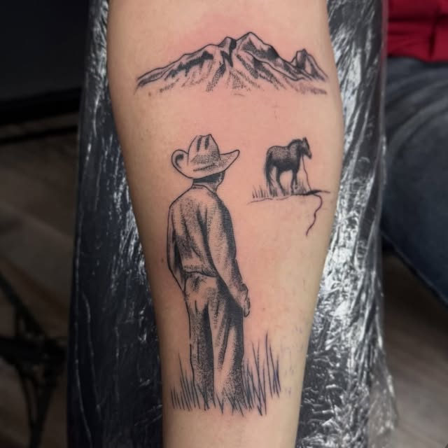
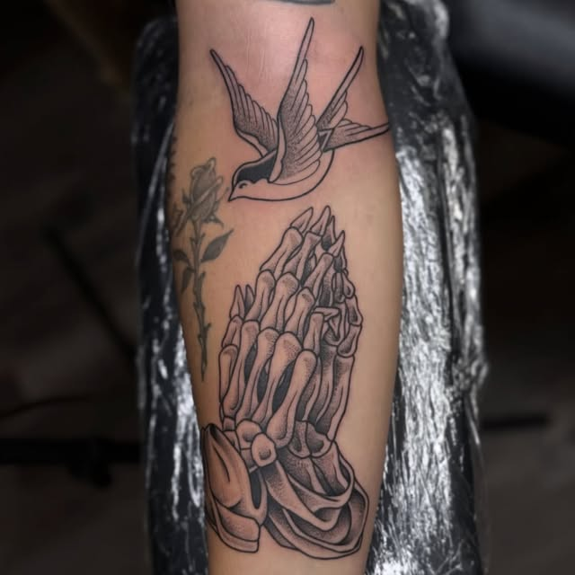
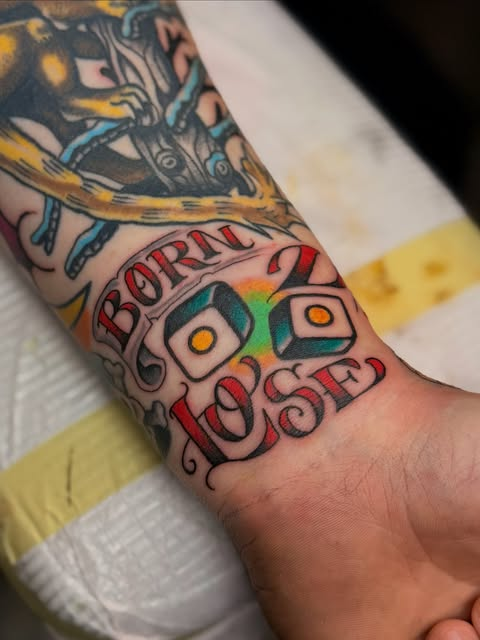
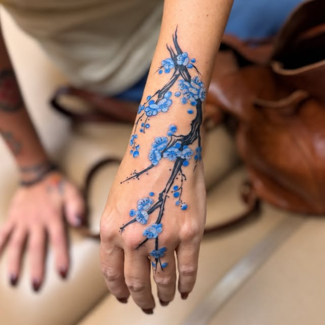
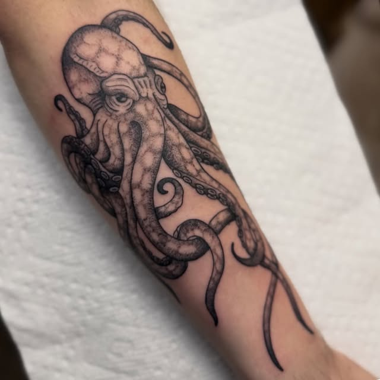

Custom Designs
Work with an artist to build something one-of-a-kind, sized and placed for you.
Baton Rouge, Louisiana
Walk-ins welcome. Fine line, traditional, and whatever else you'd like.
Walk-ins Wed–Sat, 1–10 PM · hours & directions
 Instagram
Instagram
 Facebook
Facebook
 Reviews
Reviews
Walk-In Warrior Tattoo is a Baton Rouge tattoo shop built on one simple idea: good tattoos should be easy to get. Walk in, look through the flash, or bring your own idea, and we'll take it from there.
Fine line and traditional are what we do best, but we're happy to take on whatever else you'd like. First tattoo or fiftieth, you'll get honest advice, straight pricing, and work we're proud to put our name on.
Walk-ins are welcome Wednesday through Saturday. Prefer to plan something bigger? Book an appointment Monday or Tuesday.
Whether it's your first piece or your fiftieth, we'll make it right.
Work with an artist to build something one-of-a-kind, sized and placed for you.
Old or regretted tattoo? We'll show you what's possible and plan it honestly.
Delicate linework, lettering and small meaningful pieces. A shop specialty.
Bold lines, solid color, designs built to last. A shop specialty.
Professional body piercing, done right. Ask about jewelry options and placement when you stop in.
Smooth shading, portraits and detailed realism.
Edit this list to match the styles the shop actually does.
A taste of what comes out of the shop. More on Instagram.





Bring a valid photo ID. Must be 18 or older.
Yes. Walk-ins are welcome during open hours. Call ahead to check artist availability.
It depends on size, detail and placement. Bring your idea and we'll quote before we start.
No. Flash and smaller pieces are often done same day. Larger custom work is best booked ahead.
A valid photo ID (18+) and reference images. Eat beforehand and wear clothing that gives access to the area.
| Wed – Sat | 1 PM – 10 PM (walk-ins) |
|---|---|
| Mon – Tue | By appointment |
| Sunday | Closed |